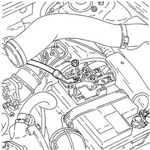
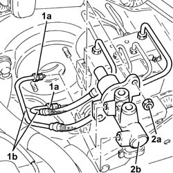
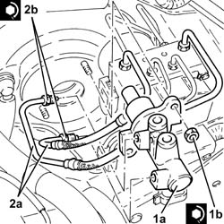

3330C10 MASTER CYLINDER (PUMP) - R + R
- Path
- Procedures > 33 BRAKING SYSTEM > 3330 HYDRAULIC BRAKING SYSTEM > 3330C BRAKE PUMP, RESERVOIR AND LOAD PROPORTIONING VALVE > 3330C10 MASTER CYLINDER (PUMP) - R + R
- Kind
- repair procedure (removal / refitting; the operation number is the code)
- Applies to
- engines: 1.8 T.SPARK, 1.9 JTD 16V; all production periods
- Interactive page
- https://sloeber94.github.io/elrnDB-aGt/en/#/125001346
Applies to: engines: 1.9 JTD 16V; all production periods
 Removing
Removing
 Refitting
RefittingProceed with removal

Applies to: engines: 1.9 JTD 16V; all production periods
Proceed with removal
Op. 3330C30 BRAKE FLUID RESERVOIR - R + R AND WASH INSIDE
1. Undo the connectors (1a) and disconnect the rigid pipe between master cylinder and A.B.S. hydraulic control unit (1b), master cylinder side.
2. Undo nuts (2a) and remove clutch master cylinder (2b).

Applies to: engines: 1.9 JTD 16V; all production periods
Refitting
Removing1. Place the master cylinder (1a) back in its housing and fix it tightening the nuts (1b) to the recommended torque.
 | Fastening | Component | Ø | Value (daNm) |
|---|---|---|---|---|
1b | Nut | BRAKE MASTER CYLINDER (PUMP) | M8 | (Brake servo side) 2.1 ÷ 2.9 |
2. Connect the rigid pipe from master cylinder to ABS hydraulic control unit, master cylinder side, and tighten the connectors (2b) to the specified torque.
| Fastening | Component | Ø | Value (daNm) |
|---|---|---|---|---|
2b | Connector | PIPE FROM PUMP TO HYDRAULIC CONTROL UNIT | M12 | (Master cylinder side) 1.3 ÷ 1.5 |

Applies to: engines: 1.9 JTD 16V; all production periods
Proceed with refitting
Op. 3330C30 BRAKE FLUID RESERVOIR - R + R AND WASH INSIDE.
Proceed with refitting